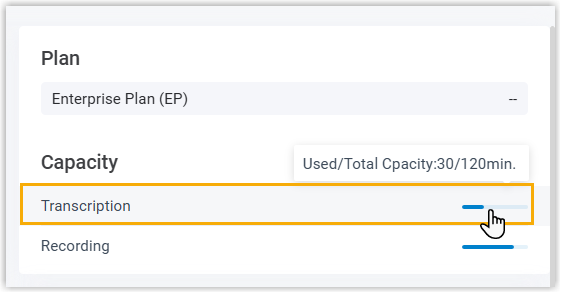
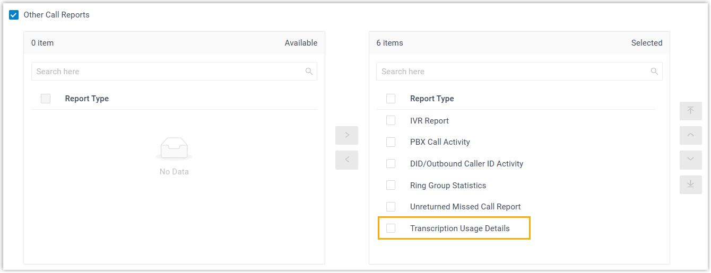
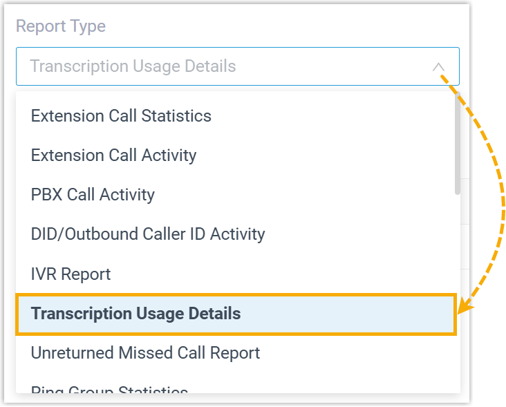
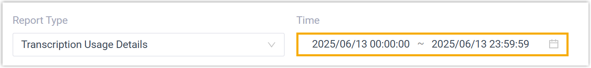
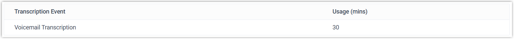

Access Transcription Usage Details Report
Transcription Usage Details report provides an overview on the total transcription minutes. This topic introduces how to access the report.
Note: In addition to checking transcription usage in the call report,
super administrator can also view transcription usage directly from the
Dashboard.

Prerequisites
- Make sure the firmware of Yeastar P-Series Software Edition is 83.19.0.x or later.
- You have the permission to access the Transcription Usage
Details report (Path: ).

Procedure
- Log in to PBX web portal, go to .
- In the Report Type drop-download list, select
Transcription Usage Details.

- Filter data by the desired time range.

A report for the selected period is displayed on the page, as shown below.

Refer to the following table for explanation of the report metrics:
Metric Description Transcription Event The type of transcription performed. In this report, the value is Voicemail Transcription. Usage (mins) The total number of transcription minutes used.